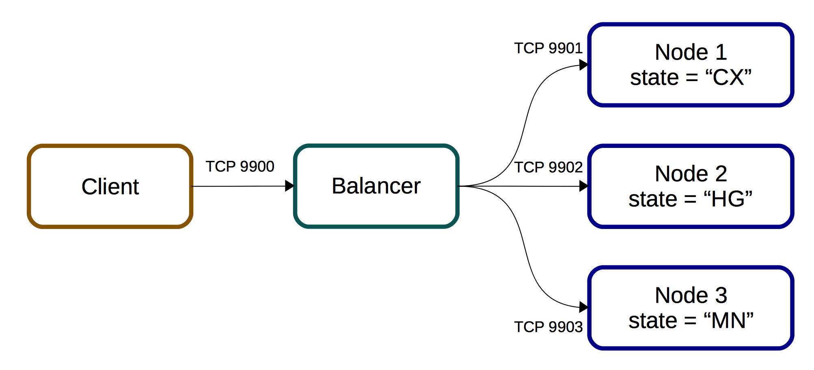

A lab exercises intended to show how to use Caudal in a distributed environment as shown in image below.

Requirements
- Have successfully completed Lab 5: Caudal Integration
Creating multiple caudal nodes
- Change current directory to the caudal-labs project parent and make two copies of the caudal-labs directory.
$ cd /projects/ |
- Edit configuration files for every Caudal instance in the cluster:
caudal-labs/config/caudal-config.clj(ns caudal-labs)
(require '[mx.interware.caudal.io.elastic :as elastic])
(require '[mx.interware.caudal.streams.common :refer :all])
(require '[mx.interware.caudal.streams.stateful :refer :all])
(require '[mx.interware.caudal.streams.stateless :refer :all])
(defsink streamer-1 10000
(printe ["Received event : "]
(split [(fn [e] (= "CX" (:state e)))]
(printe ["Forwarding event to node 1 : "] (forward ["localhost" 9901]))
[(fn [e] (= "HG" (:state e)))]
(printe ["Forwarding event to node 2 : "] (forward ["localhost" 9902]))
[(fn [e] (= "MN" (:state e)))]
(printe ["Forwarding event to node 3 : "] (forward ["localhost" 9903]))
(printe ["Skipping event : "] ))))
(deflistener tcp-listener [{:type 'mx.interware.caudal.io.tcp-server
:parameters {:port 9900
:idle-period 60}}])
(wire [tcp-listener] [streamer-1])
caudal-labs-n1/config/caudal-config.clj(ns caudal-labs)
(require '[mx.interware.caudal.streams.common :refer :all])
(require '[mx.interware.caudal.streams.stateful :refer :all])
(require '[mx.interware.caudal.streams.stateless :refer :all])
(defn calculate-iva [event]
(let [price (:price event)
ammount (:ammount event)
sub-total (* ammount price)
iva (* 0.15 sub-total)
total (+ sub-total iva)]
(assoc event :sub-total sub-total :iva iva :total total)))
(defsink streamer-1 10000
(smap [calculate-iva]
(printe ["IVA 15% applied : "])))
(deflistener tcp-listener [{:type 'mx.interware.caudal.io.tcp-server
:parameters {:port 9901
:idle-period 60}}])
(wire [tcp-listener] [streamer-1])
caudal-labs-n2/config/caudal-config.clj(ns caudal-labs)
(require '[mx.interware.caudal.streams.common :refer :all])
(require '[mx.interware.caudal.streams.stateful :refer :all])
(require '[mx.interware.caudal.streams.stateless :refer :all])
(defn calculate-iva [event]
(let [price (:price event)
ammount (:ammount event)
sub-total (* ammount price)
iva (* 0.16 sub-total)
total (+ sub-total iva)]
(assoc event :sub-total sub-total :iva iva :total total)))
(defsink streamer-1 10000
(smap [calculate-iva]
(printe ["IVA 16% applied : "])))
(deflistener tcp-listener [{:type 'mx.interware.caudal.io.tcp-server
:parameters {:port 9902
:idle-period 60}}])
(wire [tcp-listener] [streamer-1])
caudal-labs-n3/config/caudal-config.clj(ns caudal-labs)
(require '[mx.interware.caudal.streams.common :refer :all])
(require '[mx.interware.caudal.streams.stateful :refer :all])
(require '[mx.interware.caudal.streams.stateless :refer :all])
(defn calculate-iva [event]
(let [price (:price event)
ammount (:ammount event)
sub-total (* ammount price)
iva (* 0.10 sub-total)
total (+ sub-total iva)]
(assoc event :sub-total sub-total :iva iva :total total)))
(defsink streamer-1 10000
(smap [calculate-iva]
(printe ["IVA 10% applied : "])))
(deflistener tcp-listener [{:type 'mx.interware.caudal.io.tcp-server
:parameters {:port 9903
:idle-period 60}}])
(wire [tcp-listener] [streamer-1])
Start Caudal instances
- Open a terminal for every caudal instance and start them as shown.
For the balancer$ cd caudal-labs/
$ ./bin/start-caudal.sh -c ./config/caudal-config.clj
Verifying JAVA instalation ...
/usr/bin/java
JAVA executable found in PATH
JAVA Version : 1.8.0_91
BIN path /projects/caudal-labs/bin
Starting Caudal from /projects/caudal-labs
__ __
_________ ___ ______/ /___ _/ /
/ ___/ __ `/ / / / __ / __ `/ /
/ /__/ /_/ / /_/ / /_/ / /_/ / /
\___/\__,_/\__,_/\__,_/\__,_/_/
Caudal 0.7.4-SNAPSHOT
log4j:WARN [stdout] should be System.out or System.err.
log4j:WARN Using previously set target, System.out by default.
log4j:WARN [stdout] should be System.out or System.err.
log4j:WARN Using previously set target, System.out by default.
SLF4J: Class path contains multiple SLF4J bindings.
SLF4J: Found binding in [jar:file:/projects/caudal-labs/lib/logback-classic-1.1.3.jar!/org/slf4j/impl/StaticLoggerBinder.class]
SLF4J: Found binding in [jar:file:/projects/caudal-labs/lib/slf4j-log4j12-1.7.5.jar!/org/slf4j/impl/StaticLoggerBinder.class]
SLF4J: See http://www.slf4j.org/codes.html#multiple_bindings for an explanation.
SLF4J: Actual binding is of type [ch.qos.logback.classic.util.ContextSelectorStaticBinder]
17:40:41.327 [main] INFO mx.interware.caudal.core.starter-dsl - {:loading-dsl {:file ./config/caudal-config.clj}}
17:40:44.102 [main] INFO mx.interware.caudal.io.tcp-server - Starting server on port : 9900 ...
For node 1$ cd caudal-labs-n1/
$ bin/start-caudal.sh -c config/caudal-config.clj
Verifying JAVA instalation ...
...
17:40:25.238 [main] INFO mx.interware.caudal.core.starter-dsl - {:loading-dsl {:file ./config/caudal-config.clj}}
17:40:26.854 [main] INFO mx.interware.caudal.io.tcp-server - Starting server on port : 9901 ...
For node 2$ cd caudal-labs-n2/
$ bin/start-caudal.sh -c config/caudal-config.clj
Verifying JAVA instalation ...
...
17:40:27.391 [main] INFO mx.interware.caudal.core.starter-dsl - {:loading-dsl {:file ./config/caudal-config.clj}}
17:40:28.926 [main] INFO mx.interware.caudal.io.tcp-server - Starting server on port : 9902 ...
For node 3$ cd caudal-labs-n3/
$ bin/start-caudal.sh -c config/caudal-config.clj
Verifying JAVA instalation ...
...
17:40:29.532 [main] INFO mx.interware.caudal.core.starter-dsl - {:loading-dsl {:file ./config/caudal-config.clj}}
17:40:30.991 [main] INFO mx.interware.caudal.io.tcp-server - Starting server on port : 9903 ...
Feeding event streamer
- Open another terminal and send some events to te balancer through the tcp channel like this.
$ telnet localhost 9900
Trying ::1...
Connected to localhost.
Escape character is '^]'.
{:tx "sale" :state "MN" :product "pear" :price 37.3 :time #inst"2017-01-16T19:14:50.522-00:00" :ammount 1}
{:tx "sale" :state "HG" :product "pear" :price 37.3 :time #inst"2017-01-16T19:14:50.596-00:00" :ammount 2}
{:tx "sale" :state "CX" :product "papaya" :price 20.5 :time #inst"2017-01-16T19:14:50.622-00:00" :ammount 4}
{:tx "sale" :state "HG" :product "mango" :price 23.0 :time #inst"2017-01-16T19:14:50.659-00:00" :ammount 5}
{:tx "sale" :state "CX" :product "avocado" :price 52.1 :time #inst"2017-01-16T19:14:50.739-00:00" :ammount 2}
{:tx "sale" :state "MN" :product "pear" :price 37.3 :time #inst"2017-01-16T19:14:50.824-00:00" :ammount 7}
{:tx "sale" :state "HG" :product "avocado" :price 52.1 :time #inst"2017-01-16T19:14:50.864-00:00" :ammount 4}
{:tx "sale" :state "CX" :product "apple" :price 42.5 :time #inst"2017-01-16T19:14:50.901-00:00" :ammount 4}
{:tx "sale" :state "HG" :product "apple" :price 42.5 :time #inst"2017-01-16T19:14:50.935-00:00" :ammount 9}
{:tx "sale" :state "MN" :product "blueberry" :price 65.2 :time #inst"2017-01-16T19:14:51.030-00:00" :ammount 1}
{:tx "sale" :state "CX" :product "papaya" :price 20.5 :time #inst"2017-01-16T19:14:51.074-00:00" :ammount 2}
{:tx "sale" :state "SL" :product "blueberry" :price 65.2 :time #inst"2017-01-16T19:14:51.103-00:00" :ammount 3}
{:tx "sale" :state "MN" :product "apple" :price 42.5 :time #inst"2017-01-16T19:14:51.148-00:00" :ammount 6}
{:tx "sale" :state "MN" :product "pear" :price 37.3 :time #inst"2017-01-16T19:14:51.245-00:00" :ammount 5}
{:tx "sale" :state "CX" :product "apple" :price 42.5 :time #inst"2017-01-16T19:14:51.341-00:00" :ammount 5}
{:tx "sale" :state "CX" :product "blueberry" :price 65.2 :time #inst"2017-01-16T19:14:51.399-00:00" :ammount 9}
{:tx "sale" :state "MN" :product "avocado" :price 52.1 :time #inst"2017-01-16T19:14:51.456-00:00" :ammount 10}
{:tx "sale" :state "CX" :product "papaya" :price 20.5 :time #inst"2017-01-16T19:14:51.491-00:00" :ammount 4}
{:tx "sale" :state "HG" :product "avocado" :price 52.1 :time #inst"2017-01-16T19:14:51.583-00:00" :ammount 9}
{:tx "sale" :state "HG" :product "blueberry" :price 65.2 :time #inst"2017-01-16T19:14:51.665-00:00" :ammount 8}
{:tx "sale" :state "MN" :product "apple" :price 42.5 :time #inst"2017-01-16T19:14:51.676-00:00" :ammount 4}
{:tx "sale" :state "MN" :product "papaya" :price 20.5 :time #inst"2017-01-16T19:14:51.699-00:00" :ammount 7}
{:tx "sale" :state "MN" :product "pear" :price 37.3 :time #inst"2017-01-16T19:14:51.799-00:00" :ammount 6}
{:tx "sale" :state "BC" :product "apple" :price 42.5 :time #inst"2017-01-16T19:14:51.802-00:00" :ammount 2}
{:tx "sale" :state "CX" :product "pear" :price 37.3 :time #inst"2017-01-16T19:14:51.805-00:00" :ammount 7}
{:tx "sale" :state "CX" :product "blueberry" :price 65.2 :time #inst"2017-01-16T19:14:51.832-00:00" :ammount 3}
{:tx "sale" :state "HG" :product "papaya" :price 20.5 :time #inst"2017-01-16T19:14:51.934-00:00" :ammount 6}
{:tx "sale" :state "HG" :product "pear" :price 37.3 :time #inst"2017-01-16T19:14:51.983-00:00" :ammount 7}
{:tx "sale" :state "CX" :product "mango" :price 23.0 :time #inst"2017-01-16T19:14:51.995-00:00" :ammount 3}
{:tx "sale" :state "CX" :product "avocado" :price 52.1 :time #inst"2017-01-16T19:14:52.095-00:00" :ammount 7}
{:tx "sale" :state "HG" :product "apple" :price 42.5 :time #inst"2017-01-16T19:14:52.186-00:00" :ammount 3}
{:tx "sale" :state "MN" :product "papaya" :price 20.5 :time #inst"2017-01-16T19:14:52.229-00:00" :ammount 9}
Verifying logs
- Verify log outputs for every Caudal instance, contents should be similar to the ones shown below.
For the balancer17:43:01.084 [NioProcessor-2] INFO o.a.m.filter.logging.LoggingFilter - RECEIVED: HeapBuffer[pos=0 lim=1980 cap=4096: 7B 3A 74 78 20 22 73 61 6C 65 22 20 3A 73 74 61...]
17:43:01.091 [NioProcessor-2] DEBUG o.a.m.f.codec.ProtocolCodecFilter - Processing a MESSAGE_RECEIVED for session 1
17:43:01.113 [NioProcessor-2] INFO o.a.m.filter.logging.LoggingFilter - RECEIVED: HeapBuffer[pos=0 lim=1538 cap=4096: 7B 3A 74 78 20 22 73 61 6C 65 22 20 3A 73 74 61...]
17:43:01.113 [NioProcessor-2] DEBUG o.a.m.f.codec.ProtocolCodecFilter - Processing a MESSAGE_RECEIVED for session 1
Received event : {:tx "sale", :state "MN", :product "pear", :price 37.3, :time #inst "2017-01-16T19:14:50.522-00:00", :ammount 1, :caudal/latency 1703049}
Forwarding event to node 3 : {:tx "sale", :state "MN", :product "pear", :price 37.3, :time #inst "2017-01-16T19:14:50.522-00:00", :ammount 1, :caudal/latency 1703049}
Received event : {:tx "sale", :state "HG", :product "pear", :price 37.3, :time #inst "2017-01-16T19:14:50.596-00:00", :ammount 2, :caudal/latency 24800937}
Forwarding event to node 2 : {:tx "sale", :state "HG", :product "pear", :price 37.3, :time #inst "2017-01-16T19:14:50.596-00:00", :ammount 2, :caudal/latency 24800937}
Received event : {:tx "sale", :state "CX", :product "papaya", :price 20.5, :time #inst "2017-01-16T19:14:50.622-00:00", :ammount 4, :caudal/latency 27304429}
Forwarding event to node 1 : {:tx "sale", :state "CX", :product "papaya", :price 20.5, :time #inst "2017-01-16T19:14:50.622-00:00", :ammount 4, :caudal/latency 27304429}
Received event : {:tx "sale", :state "HG", :product "mango", :price 23.0, :time #inst "2017-01-16T19:14:50.659-00:00", :ammount 5, :caudal/latency 28387626}
Forwarding event to node 2 : {:tx "sale", :state "HG", :product "mango", :price 23.0, :time #inst "2017-01-16T19:14:50.659-00:00", :ammount 5, :caudal/latency 28387626}
Received event : {:tx "sale", :state "CX", :product "avocado", :price 52.1, :time #inst "2017-01-16T19:14:50.739-00:00", :ammount 2, :caudal/latency 87997042}
Forwarding event to node 1 : {:tx "sale", :state "CX", :product "avocado", :price 52.1, :time #inst "2017-01-16T19:14:50.739-00:00", :ammount 2, :caudal/latency 87997042}
Received event : {:tx "sale", :state "MN", :product "pear", :price 37.3, :time #inst "2017-01-16T19:14:50.824-00:00", :ammount 7, :caudal/latency 89794628}
Forwarding event to node 3 : {:tx "sale", :state "MN", :product "pear", :price 37.3, :time #inst "2017-01-16T19:14:50.824-00:00", :ammount 7, :caudal/latency 89794628}
Received event : {:tx "sale", :state "HG", :product "avocado", :price 52.1, :time #inst "2017-01-16T19:14:50.864-00:00", :ammount 4, :caudal/latency 90921996}
Forwarding event to node 2 : {:tx "sale", :state "HG", :product "avocado", :price 52.1, :time #inst "2017-01-16T19:14:50.864-00:00", :ammount 4, :caudal/latency 90921996}
Received event : {:tx "sale", :state "CX", :product "apple", :price 42.5, :time #inst "2017-01-16T19:14:50.901-00:00", :ammount 4, :caudal/latency 91142485}
Forwarding event to node 1 : {:tx "sale", :state "CX", :product "apple", :price 42.5, :time #inst "2017-01-16T19:14:50.901-00:00", :ammount 4, :caudal/latency 91142485}
Received event : {:tx "sale", :state "HG", :product "apple", :price 42.5, :time #inst "2017-01-16T19:14:50.935-00:00", :ammount 9, :caudal/latency 91213307}
Forwarding event to node 2 : {:tx "sale", :state "HG", :product "apple", :price 42.5, :time #inst "2017-01-16T19:14:50.935-00:00", :ammount 9, :caudal/latency 91213307}
Received event : {:tx "sale", :state "MN", :product "blueberry", :price 65.2, :time #inst "2017-01-16T19:14:51.030-00:00", :ammount 1, :caudal/latency 91381028}
Forwarding event to node 3 : {:tx "sale", :state "MN", :product "blueberry", :price 65.2, :time #inst "2017-01-16T19:14:51.030-00:00", :ammount 1, :caudal/latency 91381028}
Received event : {:tx "sale", :state "CX", :product "papaya", :price 20.5, :time #inst "2017-01-16T19:14:51.074-00:00", :ammount 2, :caudal/latency 91525132}
Forwarding event to node 1 : {:tx "sale", :state "CX", :product "papaya", :price 20.5, :time #inst "2017-01-16T19:14:51.074-00:00", :ammount 2, :caudal/latency 91525132}
Received event : {:tx "sale", :state "SL", :product "blueberry", :price 65.2, :time #inst "2017-01-16T19:14:51.103-00:00", :ammount 3, :caudal/latency 91859631}
Skipping event : {:tx "sale", :state "SL", :product "blueberry", :price 65.2, :time #inst "2017-01-16T19:14:51.103-00:00", :ammount 3, :caudal/latency 91859631}
Received event : {:tx "sale", :state "MN", :product "apple", :price 42.5, :time #inst "2017-01-16T19:14:51.148-00:00", :ammount 6, :caudal/latency 91950136}
Forwarding event to node 3 : {:tx "sale", :state "MN", :product "apple", :price 42.5, :time #inst "2017-01-16T19:14:51.148-00:00", :ammount 6, :caudal/latency 91950136}
Received event : {:tx "sale", :state "MN", :product "pear", :price 37.3, :time #inst "2017-01-16T19:14:51.245-00:00", :ammount 5, :caudal/latency 92141636}
Forwarding event to node 3 : {:tx "sale", :state "MN", :product "pear", :price 37.3, :time #inst "2017-01-16T19:14:51.245-00:00", :ammount 5, :caudal/latency 92141636}
Received event : {:tx "sale", :state "CX", :product "apple", :price 42.5, :time #inst "2017-01-16T19:14:51.341-00:00", :ammount 5, :caudal/latency 91979504}
Forwarding event to node 1 : {:tx "sale", :state "CX", :product "apple", :price 42.5, :time #inst "2017-01-16T19:14:51.341-00:00", :ammount 5, :caudal/latency 91979504}
Received event : {:tx "sale", :state "CX", :product "blueberry", :price 65.2, :time #inst "2017-01-16T19:14:51.399-00:00", :ammount 9, :caudal/latency 91785620}
Forwarding event to node 1 : {:tx "sale", :state "CX", :product "blueberry", :price 65.2, :time #inst "2017-01-16T19:14:51.399-00:00", :ammount 9, :caudal/latency 91785620}
Received event : {:tx "sale", :state "MN", :product "avocado", :price 52.1, :time #inst "2017-01-16T19:14:51.456-00:00", :ammount 10, :caudal/latency 93103517}
Forwarding event to node 3 : {:tx "sale", :state "MN", :product "avocado", :price 52.1, :time #inst "2017-01-16T19:14:51.456-00:00", :ammount 10, :caudal/latency 93103517}
Received event : {:tx "sale", :state "CX", :product "papaya", :price 20.5, :time #inst "2017-01-16T19:14:51.491-00:00", :ammount 4, :caudal/latency 94101018}
Forwarding event to node 1 : {:tx "sale", :state "CX", :product "papaya", :price 20.5, :time #inst "2017-01-16T19:14:51.491-00:00", :ammount 4, :caudal/latency 94101018}
Received event : {:tx "sale", :state "HG", :product "avocado", :price 52.1, :time #inst "2017-01-16T19:14:51.583-00:00", :ammount 9, :caudal/latency 92436890}
Forwarding event to node 2 : {:tx "sale", :state "HG", :product "avocado", :price 52.1, :time #inst "2017-01-16T19:14:51.583-00:00", :ammount 9, :caudal/latency 92436890}
Received event : {:tx "sale", :state "HG", :product "blueberry", :price 65.2, :time #inst "2017-01-16T19:14:51.665-00:00", :ammount 8, :caudal/latency 92535153}
Forwarding event to node 2 : {:tx "sale", :state "HG", :product "blueberry", :price 65.2, :time #inst "2017-01-16T19:14:51.665-00:00", :ammount 8, :caudal/latency 92535153}
Received event : {:tx "sale", :state "MN", :product "apple", :price 42.5, :time #inst "2017-01-16T19:14:51.676-00:00", :ammount 4, :caudal/latency 98284155}
Forwarding event to node 3 : {:tx "sale", :state "MN", :product "apple", :price 42.5, :time #inst "2017-01-16T19:14:51.676-00:00", :ammount 4, :caudal/latency 98284155}
Received event : {:tx "sale", :state "MN", :product "papaya", :price 20.5, :time #inst "2017-01-16T19:14:51.699-00:00", :ammount 7, :caudal/latency 111235662}
Forwarding event to node 3 : {:tx "sale", :state "MN", :product "papaya", :price 20.5, :time #inst "2017-01-16T19:14:51.699-00:00", :ammount 7, :caudal/latency 111235662}
Received event : {:tx "sale", :state "MN", :product "pear", :price 37.3, :time #inst "2017-01-16T19:14:51.799-00:00", :ammount 6, :caudal/latency 111432909}
Forwarding event to node 3 : {:tx "sale", :state "MN", :product "pear", :price 37.3, :time #inst "2017-01-16T19:14:51.799-00:00", :ammount 6, :caudal/latency 111432909}
Received event : {:tx "sale", :state "BC", :product "apple", :price 42.5, :time #inst "2017-01-16T19:14:51.802-00:00", :ammount 2, :caudal/latency 111679578}
Skipping event : {:tx "sale", :state "BC", :product "apple", :price 42.5, :time #inst "2017-01-16T19:14:51.802-00:00", :ammount 2, :caudal/latency 111679578}
Received event : {:tx "sale", :state "CX", :product "pear", :price 37.3, :time #inst "2017-01-16T19:14:51.805-00:00", :ammount 7, :caudal/latency 113063525}
Forwarding event to node 1 : {:tx "sale", :state "CX", :product "pear", :price 37.3, :time #inst "2017-01-16T19:14:51.805-00:00", :ammount 7, :caudal/latency 113063525}
Received event : {:tx "sale", :state "CX", :product "blueberry", :price 65.2, :time #inst "2017-01-16T19:14:51.832-00:00", :ammount 3, :caudal/latency 113499038}
Forwarding event to node 1 : {:tx "sale", :state "CX", :product "blueberry", :price 65.2, :time #inst "2017-01-16T19:14:51.832-00:00", :ammount 3, :caudal/latency 113499038}
Received event : {:tx "sale", :state "HG", :product "papaya", :price 20.5, :time #inst "2017-01-16T19:14:51.934-00:00", :ammount 6, :caudal/latency 114092915}
Forwarding event to node 2 : {:tx "sale", :state "HG", :product "papaya", :price 20.5, :time #inst "2017-01-16T19:14:51.934-00:00", :ammount 6, :caudal/latency 114092915}
Received event : {:tx "sale", :state "HG", :product "pear", :price 37.3, :time #inst "2017-01-16T19:14:51.983-00:00", :ammount 7, :caudal/latency 114284876}
Forwarding event to node 2 : {:tx "sale", :state "HG", :product "pear", :price 37.3, :time #inst "2017-01-16T19:14:51.983-00:00", :ammount 7, :caudal/latency 114284876}
Received event : {:tx "sale", :state "CX", :product "mango", :price 23.0, :time #inst "2017-01-16T19:14:51.995-00:00", :ammount 3, :caudal/latency 114337642}
Forwarding event to node 1 : {:tx "sale", :state "CX", :product "mango", :price 23.0, :time #inst "2017-01-16T19:14:51.995-00:00", :ammount 3, :caudal/latency 114337642}
Received event : {:tx "sale", :state "CX", :product "avocado", :price 52.1, :time #inst "2017-01-16T19:14:52.095-00:00", :ammount 7, :caudal/latency 114387920}
Forwarding event to node 1 : {:tx "sale", :state "CX", :product "avocado", :price 52.1, :time #inst "2017-01-16T19:14:52.095-00:00", :ammount 7, :caudal/latency 114387920}
Received event : {:tx "sale", :state "HG", :product "apple", :price 42.5, :time #inst "2017-01-16T19:14:52.186-00:00", :ammount 3, :caudal/latency 115453943}
Forwarding event to node 2 : {:tx "sale", :state "HG", :product "apple", :price 42.5, :time #inst "2017-01-16T19:14:52.186-00:00", :ammount 3, :caudal/latency 115453943}
Received event : {:tx "sale", :state "MN", :product "papaya", :price 20.5, :time #inst "2017-01-16T19:14:52.229-00:00", :ammount 9, :caudal/latency 115569185}
Forwarding event to node 3 : {:tx "sale", :state "MN", :product "papaya", :price 20.5, :time #inst "2017-01-16T19:14:52.229-00:00", :ammount 9, :caudal/latency 115569185}
For node 117:43:01.257 [NioProcessor-2] INFO o.a.m.filter.logging.LoggingFilter - CREATED
17:43:01.261 [NioProcessor-2] INFO o.a.m.filter.logging.LoggingFilter - OPENED
17:43:01.266 [NioProcessor-2] INFO o.a.m.filter.logging.LoggingFilter - RECEIVED: HeapBuffer[pos=0 lim=1558 cap=4096: 7B 3A 74 78 20 22 73 61 6C 65 22 2C 20 3A 73 74...]
17:43:01.274 [NioProcessor-2] DEBUG o.a.m.f.codec.ProtocolCodecFilter - Processing a MESSAGE_RECEIVED for session 1
IVA 15% applied : {:ammount 4, :sub-total 82.0, :time #inst "2017-01-16T19:14:50.622-00:00", :state "CX", :product "papaya", :total 94.3, :tx "sale", :price 20.5, :caudal/latency 10319710, :iva 12.299999999999999}
IVA 15% applied : {:ammount 2, :sub-total 104.2, :time #inst "2017-01-16T19:14:50.739-00:00", :state "CX", :product "avocado", :total 119.83, :tx "sale", :price 52.1, :caudal/latency 123841611, :iva 15.629999999999999}
IVA 15% applied : {:ammount 4, :sub-total 170.0, :time #inst "2017-01-16T19:14:50.901-00:00", :state "CX", :product "apple", :total 195.5, :tx "sale", :price 42.5, :caudal/latency 121994140, :iva 25.5}
IVA 15% applied : {:ammount 2, :sub-total 41.0, :time #inst "2017-01-16T19:14:51.074-00:00", :state "CX", :product "papaya", :total 47.15, :tx "sale", :price 20.5, :caudal/latency 121822594, :iva 6.1499999999999995}
IVA 15% applied : {:ammount 5, :sub-total 212.5, :time #inst "2017-01-16T19:14:51.341-00:00", :state "CX", :product "apple", :total 244.375, :tx "sale", :price 42.5, :caudal/latency 121339126, :iva 31.875}
IVA 15% applied : {:ammount 9, :sub-total 586.8000000000001, :time #inst "2017-01-16T19:14:51.399-00:00", :state "CX", :product "blueberry", :total 674.82, :tx "sale", :price 65.2, :caudal/latency 119148197, :iva 88.02000000000001}
IVA 15% applied : {:ammount 4, :sub-total 82.0, :time #inst "2017-01-16T19:14:51.491-00:00", :state "CX", :product "papaya", :total 94.3, :tx "sale", :price 20.5, :caudal/latency 119100926, :iva 12.299999999999999}
IVA 15% applied : {:ammount 7, :sub-total 261.09999999999997, :time #inst "2017-01-16T19:14:51.805-00:00", :state "CX", :product "pear", :total 300.265, :tx "sale", :price 37.3, :caudal/latency 118858056, :iva 39.16499999999999}
IVA 15% applied : {:ammount 3, :sub-total 195.60000000000002, :time #inst "2017-01-16T19:14:51.832-00:00", :state "CX", :product "blueberry", :total 224.94000000000003, :tx "sale", :price 65.2, :caudal/latency 119206970, :iva 29.340000000000003}
IVA 15% applied : {:ammount 3, :sub-total 69.0, :time #inst "2017-01-16T19:14:51.995-00:00", :state "CX", :product "mango", :total 79.35, :tx "sale", :price 23.0, :caudal/latency 119625595, :iva 10.35}
IVA 15% applied : {:ammount 7, :sub-total 364.7, :time #inst "2017-01-16T19:14:52.095-00:00", :state "CX", :product "avocado", :total 419.405, :tx "sale", :price 52.1, :caudal/latency 119176580, :iva 54.705}
For node 217:43:01.257 [NioProcessor-2] INFO o.a.m.filter.logging.LoggingFilter - CREATED
17:43:01.261 [NioProcessor-2] INFO o.a.m.filter.logging.LoggingFilter - OPENED
17:43:01.266 [NioProcessor-2] INFO o.a.m.filter.logging.LoggingFilter - RECEIVED: HeapBuffer[pos=0 lim=1270 cap=4096: 7B 3A 74 78 20 22 73 61 6C 65 22 2C 20 3A 73 74...]
17:43:01.277 [NioProcessor-2] DEBUG o.a.m.f.codec.ProtocolCodecFilter - Processing a MESSAGE_RECEIVED for session 1
IVA 16% applied : {:ammount 2, :sub-total 74.6, :time #inst "2017-01-16T19:14:50.596-00:00", :state "HG", :product "pear", :total 86.536, :tx "sale", :price 37.3, :caudal/latency 16236196, :iva 11.936}
IVA 16% applied : {:ammount 5, :sub-total 115.0, :time #inst "2017-01-16T19:14:50.659-00:00", :state "HG", :product "mango", :total 133.4, :tx "sale", :price 23.0, :caudal/latency 119791208, :iva 18.400000000000002}
IVA 16% applied : {:ammount 4, :sub-total 208.4, :time #inst "2017-01-16T19:14:50.864-00:00", :state "HG", :product "avocado", :total 241.744, :tx "sale", :price 52.1, :caudal/latency 123788920, :iva 33.344}
IVA 16% applied : {:ammount 9, :sub-total 382.5, :time #inst "2017-01-16T19:14:50.935-00:00", :state "HG", :product "apple", :total 443.7, :tx "sale", :price 42.5, :caudal/latency 124249955, :iva 61.2}
IVA 16% applied : {:ammount 9, :sub-total 468.90000000000003, :time #inst "2017-01-16T19:14:51.583-00:00", :state "HG", :product "avocado", :total 543.924, :tx "sale", :price 52.1, :caudal/latency 124185250, :iva 75.024}
IVA 16% applied : {:ammount 8, :sub-total 521.6, :time #inst "2017-01-16T19:14:51.665-00:00", :state "HG", :product "blueberry", :total 605.056, :tx "sale", :price 65.2, :caudal/latency 124121477, :iva 83.456}
IVA 16% applied : {:ammount 6, :sub-total 123.0, :time #inst "2017-01-16T19:14:51.934-00:00", :state "HG", :product "papaya", :total 142.68, :tx "sale", :price 20.5, :caudal/latency 124167079, :iva 19.68}
IVA 16% applied : {:ammount 7, :sub-total 261.09999999999997, :time #inst "2017-01-16T19:14:51.983-00:00", :state "HG", :product "pear", :total 302.876, :tx "sale", :price 37.3, :caudal/latency 124560437, :iva 41.775999999999996}
IVA 16% applied : {:ammount 3, :sub-total 127.5, :time #inst "2017-01-16T19:14:52.186-00:00", :state "HG", :product "apple", :total 147.9, :tx "sale", :price 42.5, :caudal/latency 124477636, :iva 20.400000000000002}
For node 317:43:01.259 [NioProcessor-2] INFO o.a.m.filter.logging.LoggingFilter - CREATED
17:43:01.262 [NioProcessor-2] INFO o.a.m.filter.logging.LoggingFilter - OPENED
17:43:01.266 [NioProcessor-2] INFO o.a.m.filter.logging.LoggingFilter - RECEIVED: HeapBuffer[pos=0 lim=1407 cap=4096: 7B 3A 74 78 20 22 73 61 6C 65 22 2C 20 3A 73 74...]
17:43:01.274 [NioProcessor-2] DEBUG o.a.m.f.codec.ProtocolCodecFilter - Processing a MESSAGE_RECEIVED for session 1
IVA 10% applied : {:ammount 1, :sub-total 37.3, :time #inst "2017-01-16T19:14:50.522-00:00", :state "MN", :product "pear", :total 41.029999999999994, :tx "sale", :price 37.3, :caudal/latency 13660288, :iva 3.73}
IVA 10% applied : {:ammount 7, :sub-total 261.09999999999997, :time #inst "2017-01-16T19:14:50.824-00:00", :state "MN", :product "pear", :total 287.21, :tx "sale", :price 37.3, :caudal/latency 111307227, :iva 26.11}
IVA 10% applied : {:ammount 1, :sub-total 65.2, :time #inst "2017-01-16T19:14:51.030-00:00", :state "MN", :product "blueberry", :total 71.72, :tx "sale", :price 65.2, :caudal/latency 110598984, :iva 6.5200000000000005}
IVA 10% applied : {:ammount 6, :sub-total 255.0, :time #inst "2017-01-16T19:14:51.148-00:00", :state "MN", :product "apple", :total 280.5, :tx "sale", :price 42.5, :caudal/latency 109723422, :iva 25.5}
IVA 10% applied : {:ammount 5, :sub-total 186.5, :time #inst "2017-01-16T19:14:51.245-00:00", :state "MN", :product "pear", :total 205.15, :tx "sale", :price 37.3, :caudal/latency 109490455, :iva 18.650000000000002}
IVA 10% applied : {:ammount 10, :sub-total 521.0, :time #inst "2017-01-16T19:14:51.456-00:00", :state "MN", :product "avocado", :total 573.1, :tx "sale", :price 52.1, :caudal/latency 109161973, :iva 52.1}
IVA 10% applied : {:ammount 4, :sub-total 170.0, :time #inst "2017-01-16T19:14:51.676-00:00", :state "MN", :product "apple", :total 187.0, :tx "sale", :price 42.5, :caudal/latency 108025365, :iva 17.0}
IVA 10% applied : {:ammount 7, :sub-total 143.5, :time #inst "2017-01-16T19:14:51.699-00:00", :state "MN", :product "papaya", :total 157.85, :tx "sale", :price 20.5, :caudal/latency 107868008, :iva 14.350000000000001}
IVA 10% applied : {:ammount 6, :sub-total 223.79999999999998, :time #inst "2017-01-16T19:14:51.799-00:00", :state "MN", :product "pear", :total 246.17999999999998, :tx "sale", :price 37.3, :caudal/latency 108332441, :iva 22.38}
IVA 10% applied : {:ammount 9, :sub-total 184.5, :time #inst "2017-01-16T19:14:52.229-00:00", :state "MN", :product "papaya", :total 202.95, :tx "sale", :price 20.5, :caudal/latency 107910470, :iva 18.45}